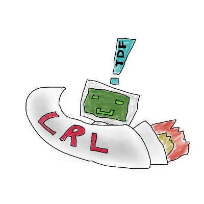
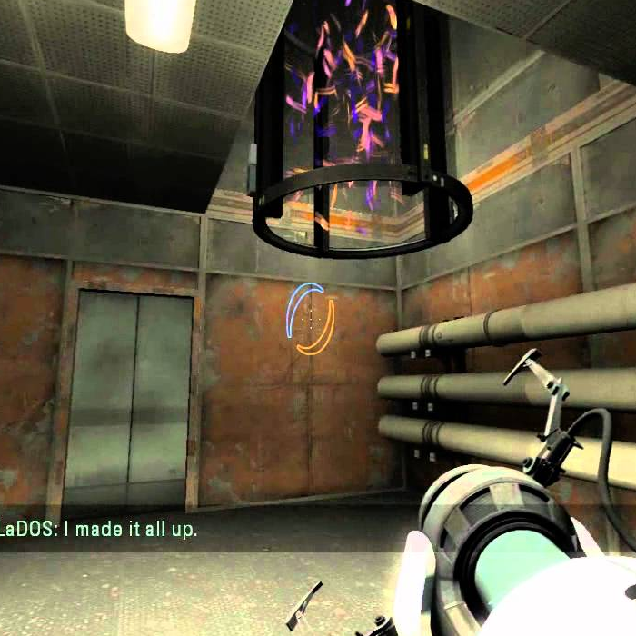

This document serves as a guide to all things TDF related. TDF is a format. TDF is a language. TDF is a way of life. Whether you are here to further develop the language, create bindings, or write or prove code in TDF, it is important that you understand all sides of the language. TDF is a domain specific language. That is to say, we forgo some of the advantages of using popular general purpose languages in exchange for a whole slew of special advantages. The reduced feature set will simplify proving code. Licensing issues will not exist and we will not find ourselves relying on code that may seem reliable but actually comes from somewhere unpredictable, such as a nightly build, for random instance. Most importantly, In-house development means our team will have a special intimate knowledge of the language we are using.
First a number of points.
All TDF keywords and literal values are in full uppercse. Devices are in uppercase. Names for abort sequences can be in any casing, but the casing must be used consistently. Units are always lowecased, to help keep them distinguishable from literals and keywords. TDF constructs that are described in more than one word may be optionally expresed via snake casing (ex: NO_DEVICE). The exception is that keywords, referred to in C under the type name 'mode', may NOT contain underscores. Multiple word keywords are simply concatinated (ex: NOOP, LOGMSG, LOGSENSOR).
TDF programs are stored in memory and processed in a manner that is reminiscent of Object-Orientation. This design choice reduces the amount of code that handles bytecode-like objects. Object- Orientation structures may or may not be involved in program execution. Use of the structures in analysis, profiling, and compilation, however is uncontested. Data structures and functions for the TDF program are largely contained in the object-model.h source file. Structures, collections of c-type variables known as fields, are named in lowercase. For example, the data structure that holds a precompiled TDF program is called 'program'. This name includes a pointer declaration by default. Significant structures in general include a pointer definition in their typedef. functions that belong to a data structure are prefixed with the name of the structure. For example, 'program_new' and 'program_free', are both functions that belong to the 'program' data structure. All functions, structures, and types are named in lowercase. Contrastingly, all enums are in full uppercase. Enums represent literal values or keywords that are used in TDF programs.
Recall that files 'README.md' and 'Makefile' are named as they are for practical and historical reasons. Other files in the codebase will typically be in "kebab-case", where spaces are replaced with a dash (ascii 0x2d). Some exceptions may be made, for example with 'testbed', which is clearly understood as one word, even though it may not appear as a compound-noun in most dictionaries. All source filenames should not any contain uppercase letters.
File extensions should be lowercase, unless there is a critical reason to do otherwise. Text files should have extensions. Prefer 'info.txt' over 'info'. Avoid uncommon file extenstions such as '.log'. Executable files without extenstions are OK on platforms other than windows
This manual contains information about development that will remain constant throughout the project's lifetime. Standards, practices, will be included here as well. It is important to read this section completely before moving on to the next reference document. Project structure, compilation, development tools, and integration will be discussed. Once you have completed this section, see development-status.txt for information about the current steps and history of development; most recent comments are stored at the top of the file.
The project root may only contain two files, 'README.md' and 'Makefile'. 'README.md' serves as an entry point to a new reader of the codebase. This file must contain instructions for compilation and configuration, reference further documentation, and contain relevant contact information. The file, 'Makefile', serves as an entry point for the compiler. Here various build profiles may be specified, including options for different platforms. Build configuration flags may be included as well. For example a build configuration flag could be used to enable a "debug" or "simulation" mode.
Everything else in project root should be a directory. Each directory has a special purpose, detailed as follows.
Every structure or function must be preceeded by a block comment annotation. This annotation must provided information how to use the object and how it works. Annotations are different from reference literature, as not everything makes into the reference. Objects described in the reference documents are intended for external use, whereas annotations cover everything. Entries in the references will obviously be more detailed. Annotations are required before significant structures. Comments that explain the behavior and choices surrounding procedural codes are expected within as well.
Annotation writing is guided by a template of tagged fields. It is not necessary to specify the types of the arguments, as that is plainly visible from the function header, instead the arguments semantic significance should be revealed. Consider the following example of a block annotation for a function.
/*
* Does math, specifically preforms and returns a sum.
* @author P. Ward
* @param x the first number
* @param y the second number
* @return the sum of x and y.
*/
The annotation helps us to understand the function before even seeing the header. Now have a look at the header.
int math_add(int x, int y);
No surprises there. The definition probably wouldn't be too surprising either. This is how it should be. Nobody likes surprises. It goes without saying that the author of an annotation must be the person who wrote the corresponding code.

A complete function annotation will begin with a description, followed with an @author tag, supply one @param tag for each argument with descriptions, finally a @return tag includes information about what is being returned. The description should detail any side-effects or significant computations as well as explain the general purpose of the function. The only difference with an struct annotation, besides the lack of a @return tag, is instead of using @param tags, you will use @field tags to similarly describe the objects. For enums use @val tags, to describe the significance of each type; let the main description be about the type of the enum. Here are some more examples. The main description is in written in paragraph form. Tag values are often singleton lists of descriptions. The tag values of W would be written as X, Y, Z where "W is X, W is Y, and W is Z" is a logical sentence describing W. This format encourages brevity and parallel phrasing as well as discorages phrasing such as "X does Y" or "Z is used to do so-and-so". Fields and values do NOT do anything, only functions do. It is important not to cross the concepts of data and routine, especially when the data concerns itself of the routines of a hosted language.
/*
* A person structure is used to keep track of some relevant health
* information.
* @author J.G. Quintel
* @field height how tall a person is, measured in meters
* @field mass how matter is in a person, measured in kg
* @field bmi Body Mass Index, derived by formula, required to be
* updated to correspond with width and height
*/
struct person
{
float height;
float mass;
float bmi;
}